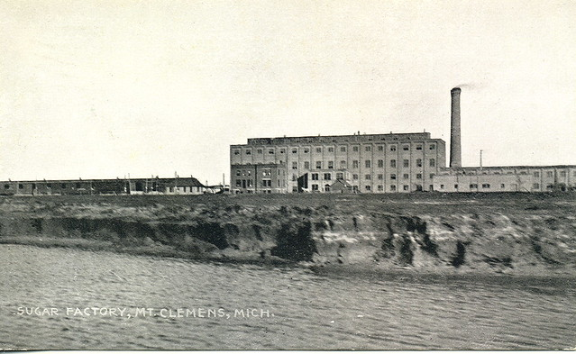

Early Sugar Land (19th Century)
Sugar Land, a diversely populated community located near coastal Texas, has roots dating back to the early 1820s. Prior to any settlers, the Native American tribes of the Karankawa and Tonkawa occupied the land; they were known for their seminomadic lifestyles and hunting prowess. They subsisted off of plants and animals native to the Sugar Land area, including deer, bison, and wild boar. Over time disease, losses of territory, and conflicts with settlers forced the Native Americans off the land— colonial settlers would soon take their place.